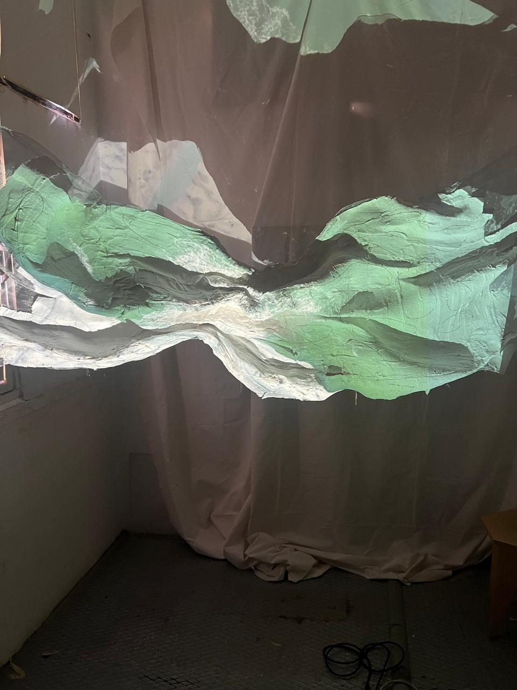
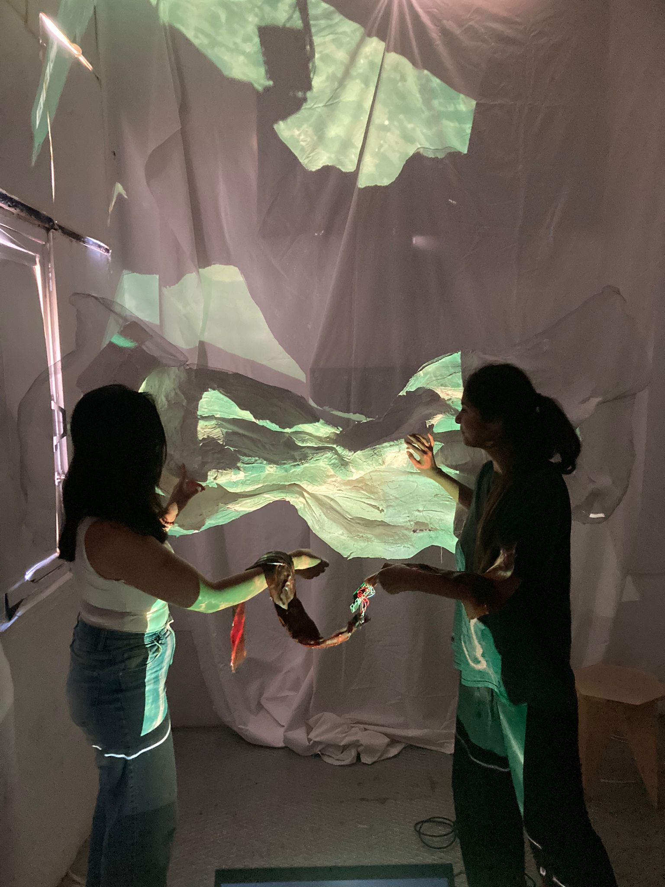
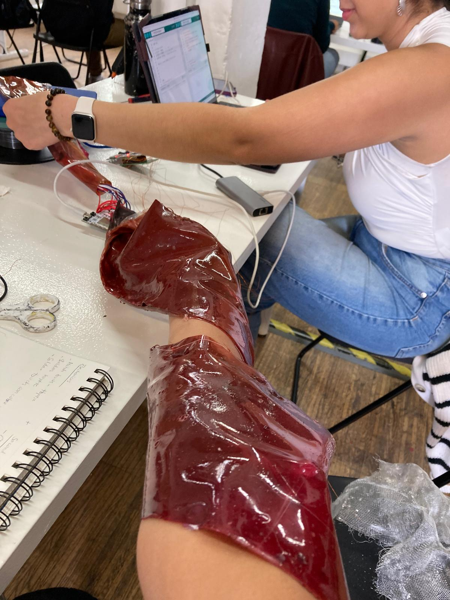
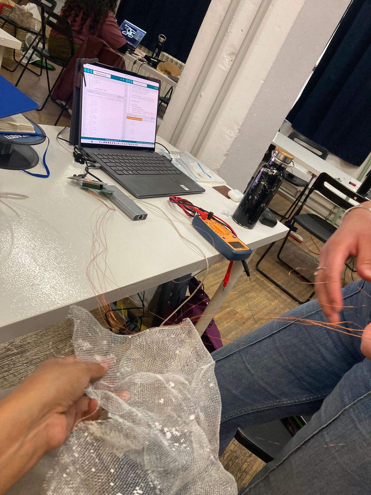
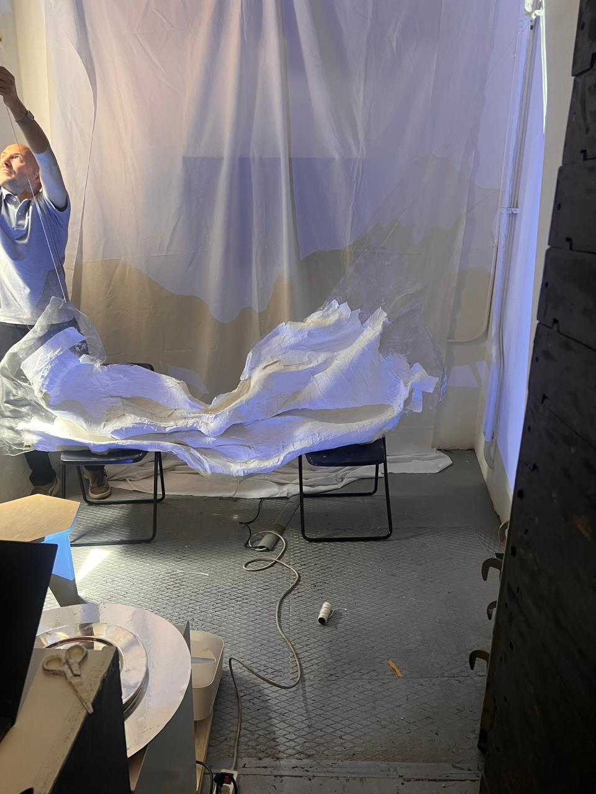
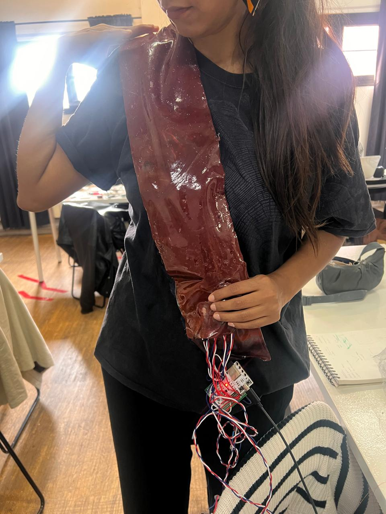

Body as Landscape¶
Individual Reflective Documentation¶

Project Introduction¶
Body as Landscape – Full Group Documentation on Hackster.io
This project explored the relationship between the human body and damaged ecosystems through touch, haptic feedback, sound, and projection. Inspired by the idea that the landscape can be understood as an extension of the body, the installation invited participants to physically interact with wounded environments rather than only observe them.
The project combined an organic sculptural structure, capacitive touch sensing, haptic wearables, biomaterials, and audiovisual feedback into a multisensory installation. By touching projected landscapes of polluted rivers, eroded soil, and damaged ecosystems, participants generated vibrations and sound on a second skin worn on the body, creating a physical connection between environmental damage and bodily sensation.
This documentation is a personal reflection focused on my own learning process, decisions, frustrations, and discoveries throughout the development of the project. For the collaborative process, technical implementation, and full system documentation, please refer to the Hackster documentation above.
1. Cognitive Trace¶
One of the main cognitive challenges during this project was figuring out how to physically represent the idea of "touching" damaged ecosystems. Conceptually, the relationship between the body and the landscape felt powerful from the beginning, but translating that idea into an interaction that people could immediately understand became much more complex once we started prototyping.
The project was developed in only four days, so many interaction decisions had to emerge directly through experimentation rather than long planning processes. One of the biggest questions became: how can a landscape behave like a touchable body?
The capacitive copper "rivers" emerged from this problem. Initially, they were simply a practical solution for mapping touch across the structure. However, while building the installation, we realized they also visually reinforced the landscape narrative by resembling rivers or veins running through the terrain.
At the same time, the copper wires also revealed a limitation in the interaction design. Because the conductive traces remained visible on the surface, the structure looked more technological than we originally intended. Ideally, the sensing system would disappear into the material itself, allowing the landscape to feel more seamless and organic.
This opened an important line of thinking for future iterations. One possibility would be adding more layers of plaster and embedding separated sections of conductive mesh underneath the surface instead of exposing copper wiring externally. Another possibility would involve exploring alternative conductive materials or hidden sensing systems that preserve the visual cleanliness of the landscape.
In that sense, the project became less about building a finished installation and more about discovering how environmental empathy could be translated into physical interaction.

2. Moral Trace¶
One of the biggest moral and collaborative decisions during the project was accepting that we needed to simplify the system in order to preserve the core experience.
Originally, we planned to integrate the installation with TouchDesigner so the projected ecosystems could visually react and "heal" through touch interactions. The idea was for touch to simultaneously affect sound, haptics, and the projected visuals, creating a fully synchronized immersive system.
However, as development progressed, we realized that trying to complete every layer of the system within four days would likely compromise the entire installation. We had to decide whether to continue pursuing a technically ambitious setup or focus on making the central interaction stable enough for the presentation.
This became an important lesson about prioritization in collaborative projects. Letting go of TouchDesigner was frustrating because it represented a significant part of the original vision. At the same time, removing it allowed us to concentrate on the tactile relationship between the participant's body and the wounded landscape, which ultimately became the strongest part of the installation.
The process made me reflect on how prototyping often involves ethical and creative compromises. Sometimes preserving the emotional clarity of an experience is more important than implementing every technological feature originally imagined.

3. Technical Trace¶
Technically, the project became a constant negotiation between functionality, instability, and improvisation.
One of the most frustrating moments happened during the final presentation. Shortly before the exhibition, the wireless communication system between the Barduinos was functioning correctly. The capacitive structure was successfully communicating with the wearable system wirelessly, and the interaction behaved as intended.
However, during the actual presentation, the system became unstable and stopped functioning reliably in wireless mode. Because of the limited time available before the exhibition started, we had to quickly adapt the setup and reconnect parts of the system directly to the computer in order to keep the installation operational.
This experience revealed how fragile interactive systems can become once they move from testing environments into public spaces. Small environmental changes, WiFi instability, power inconsistencies, or signal interference can completely alter system behavior.
Another technical challenge involved the capacitive sensing itself. The touch mapping system worked, but it relied on visible copper wiring distributed across the structure. While effective functionally, the exposed conductive traces made the interaction layer visually apparent.
Future iterations should focus on creating a cleaner sensing system integrated more directly into the structure itself. One idea would be increasing the number of plaster layers and testing whether the metallic mesh underneath remains conductive enough to function as distributed capacitive zones. This could potentially eliminate the need for visible copper traces on the surface.
The project ultimately taught me that interactive installations are rarely stable, closed systems. They are fragile assemblies where materials, electronics, space, timing, and human interaction continuously affect one another.


4. Challenges & Failures¶
The entire installation was developed within four days, so many decisions became exercises in rapid improvisation.
One challenge was balancing ambition with feasibility. We initially planned a much more integrated audiovisual system where touch interactions would directly modify the projected landscapes in real time using TouchDesigner. However, integrating projection mapping, sensors, haptics, sound, and wireless communication within the available timeframe became unrealistic.
Another challenge was debugging distributed systems. Because the project relied on multiple Barduinos communicating wirelessly, diagnosing problems became difficult. Sometimes the issue was code. Other times it was signal interference, unstable WiFi, incorrect thresholds, power inconsistencies, or synchronization problems.
The biomaterials also introduced limitations. Although visually successful, the gelatin skin still needs preservation improvements and stronger durability.
At moments, the project felt held together by improvisation. But I think this is also part of prototyping interactive installations. The final artifact is not only the successful moments, but also the visible traces of experimentation, instability, and adaptation.
5. Review & Future Directions¶
Rather than understanding this project as a finished artifact, I see it as a first prototype exploring how environmental awareness can become embodied through touch.
The strongest aspect of the installation was not technological complexity, but the moment when participants physically connected touch, vibration, and wounded landscapes together.
Future iterations would focus on:
- integrating cleaner hidden sensing systems
- improving wireless stability
- reintroducing TouchDesigner for reactive visual healing
- creating more precise touch mapping
- strengthening the structure with additional plaster layers
- exploring alternative conductive materials
- refining the haptic responses across the body
The long-term goal would be creating immersive environments where environmental care is experienced.

6. What This Prototype Is¶
This project is not a finished product.
It is a material and technical exploration about how environmental empathy might be translated into physical sensation.
The installation does not attempt to solve environmental issues directly. Instead, it creates a small embodied interaction that asks participants to reconsider the relationship between their bodies and damaged ecosystems.
For me, the most valuable aspect of the project was discovering how fragile, unstable, and emotional interactive systems can become when the body itself is treated as an interface.
7. Next Steps¶
If I continue developing this project, the priorities would be:
- integrating TouchDesigner for reactive visual healing
- improving wireless synchronization between devices
- refining the capacitive sensing thresholds
- creating stronger and more durable structures
- improving biomaterial preservation and flexibility
- exploring continuous touch tracking
- designing more nuanced haptic vocabularies
- expanding the installation scale
- experimenting with additional sensory layers such as temperature or airflow
Further exploration:
I would also like to further investigate how interactive installations can create embodied forms of environmental awareness without relying purely on informational narratives.
The long-term goal would be creating immersive environments where care, touch, and environmental perception become physically inseparable.
Project Gallery
Use arrows to navigate through project images
.png)
.png)